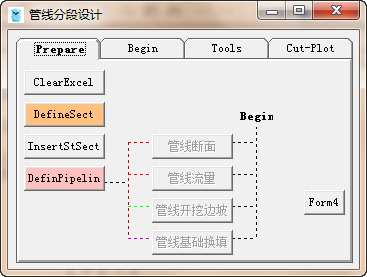
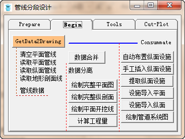
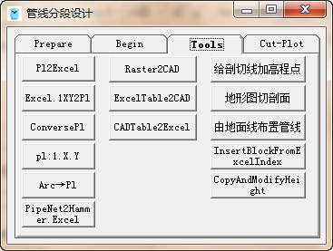
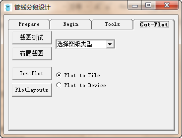
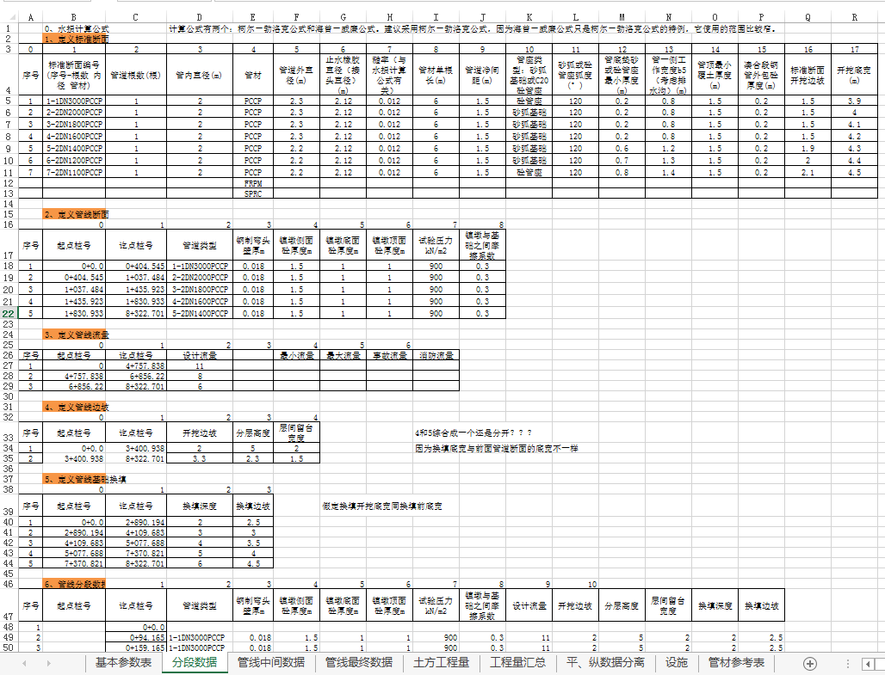

软件概要
主要用于长距离供水工程的管线设计工作。该软件采用 vb 语言编写，通过连接 autocad 和 excel 这 2 个设计中最常用的软件，将供水工程的设计过程整合在一个小小面板上。软件特点是针对长距离管道输水工程，集管线流程设计中的计算和制图于一体，既可以一键成图，又可以分步执行，目的就是在一些通常条件下，可以在几小时内完成设计生成工程量和图纸。因为快速，软件对于管线布置（纵剖面布置）的多方案研究有很大帮助。对于投标、可研等要求不高的情况下，能短时间完成管线设计工作。初设、施工图阶段可在此软件成图基础上进一步修改，仍然提高效率。
软件运行环境
供水管线设计工具软件 for AutoCAD 2014 、 Excel2003 ～ 2013
适用平台：
Windows ： Win7-64 位
AutoCAD ： 2014
Excel ： 2003 ～ 2013
语言：中文 English
软件功能
软件界面




Excel 文件为本程序不可分割的一部分：标签页分别为“基本参数表”；“分段数据”；“管线中间数据”；“管线最终数据”；“土方工程量”；“工程量汇总”；“平、纵数据分离”；“设施”。 ——标签名称不能修改。
